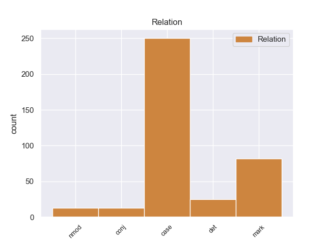
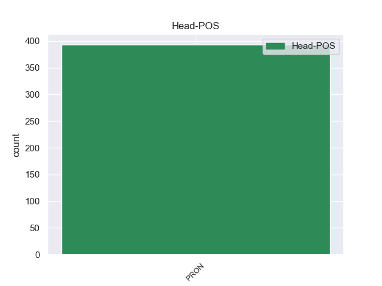
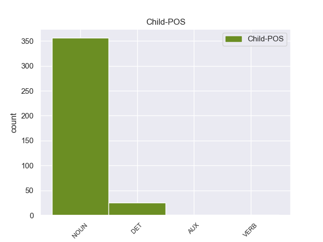

Distribution of features within this leaf



Agreement Rules sorted by frequency.
- When the dependent token is the case marking(case) of the head token, and the head token is PRON and the dependent token is NOUN.
1 उनका _ _ _ _ 0 _ _ _
2 कहना _ _ _ _ 0 _ _ _
3 है _ _ _ _ 0 _ _ _
4 कि _ _ _ _ 0 _ _ _
5 छोटे _ _ _ _ 0 _ _ _
6 शहरों _ _ _ _ 0 _ _ _
7 व _ _ _ _ 0 _ _ _
8 गाँवों _ _ _ _ 0 _ _ _
9 में _ _ _ _ 0 _ _ _
10 रहने _ _ _ _ 0 _ _ _
11 वाले _ _ _ _ 0 _ _ _
12 लोगों _ _ _ _ 0 _ _ _
13 को _ _ _ _ 0 _ _ _
14 ट्रेन _ _ _ _ 0 _ _ _
15 के _ _ _ _ 0 _ _ _
16 जरिये _ _ _ _ 0 _ _ _
17 पर्यटन _ _ _ _ 0 _ _ _
18 की _ _ _ _ 0 _ _ _
19 कोई कोई PRON PRP Case=Nom|Number=Sing|Person=3|PronType=Prs 0 _ _ _
20 सुविधा सुविधा NOUN NN Case=Nom|Gender=Fem|Number=Sing|Person=3 19 case _ ChunkId=NP7|ChunkType=head|Tam=0|Translit=suvidhā|Vib=0
21 नहीं _ _ _ _ 0 _ _ _
22 मिलती _ _ _ _ 0 _ _ _
23 । _ _ _ _ 0 _ _ _
1 कांग्रेस _ _ _ _ 0 _ _ _
2 ने _ _ _ _ 0 _ _ _
3 गांधी _ _ _ _ 0 _ _ _
4 के _ _ _ _ 0 _ _ _
5 साथ _ _ _ _ 0 _ _ _
6 अपने _ _ _ _ 0 _ _ _
7 रिश्ते _ _ _ _ 0 _ _ _
8 को _ _ _ _ 0 _ _ _
9 मजबूत _ _ _ _ 0 _ _ _
10 करने _ _ _ _ 0 _ _ _
11 में _ _ _ _ 0 _ _ _
12 कोई कोई PRON PRP Case=Nom|Number=Sing|Person=3|PronType=Prs 0 _ _ _
13 कसर कसर NOUN NN Case=Nom|Gender=Fem|Number=Sing|Person=3 12 mark _ ChunkId=NP5|ChunkType=head|Tam=0|Translit=kasara|Vib=0
14 नहीं _ _ _ _ 0 _ _ _
15 छोड़ी _ _ _ _ 0 _ _ _
16 । _ _ _ _ 0 _ _ _
1 यह यह DET DEM Case=Nom|Number=Sing|Person=3|PronType=Dem 2 det _ ChunkId=NP|ChunkType=child|Translit=yaha
2 सब सब PRON PRP Case=Nom|Number=Plur|Person=3|PronType=Prs 0 _ _ _
3 हमारी _ _ _ _ 0 _ _ _
4 प्रतिबद्धता _ _ _ _ 0 _ _ _
5 , _ _ _ _ 0 _ _ _
6 श्रम _ _ _ _ 0 _ _ _
7 और _ _ _ _ 0 _ _ _
8 प्रयासों _ _ _ _ 0 _ _ _
9 से _ _ _ _ 0 _ _ _
10 संभव _ _ _ _ 0 _ _ _
11 हो _ _ _ _ 0 _ _ _
12 सकेगा _ _ _ _ 0 _ _ _
13 । _ _ _ _ 0 _ _ _
1 केंद्र _ _ _ _ 0 _ _ _
2 में _ _ _ _ 0 _ _ _
3 एनडीए _ _ _ _ 0 _ _ _
4 की _ _ _ _ 0 _ _ _
5 वाजपेयी _ _ _ _ 0 _ _ _
6 सरकार _ _ _ _ 0 _ _ _
7 द्वारा _ _ _ _ 0 _ _ _
8 दिल्ली _ _ _ _ 0 _ _ _
9 को _ _ _ _ 0 _ _ _
10 पूर्ण _ _ _ _ 0 _ _ _
11 राज्य _ _ _ _ 0 _ _ _
12 का _ _ _ _ 0 _ _ _
13 दर्जा _ _ _ _ 0 _ _ _
14 देने _ _ _ _ 0 _ _ _
15 संबधी _ _ _ _ 0 _ _ _
16 बिल बिल NOUN NN Case=Nom|Gender=Masc|Number=Sing|Person=3 17 nmod _ ChunkId=NP7|ChunkType=head|Tam=0|Translit=bila|Vib=0
17 जो जो PRON PRP Case=Nom|Number=Sing|Person=3|PronType=Prs 0 _ _ _
18 संसद _ _ _ _ 0 _ _ _
19 में _ _ _ _ 0 _ _ _
20 पेश _ _ _ _ 0 _ _ _
21 हुआ _ _ _ _ 0 _ _ _
22 है _ _ _ _ 0 _ _ _
23 , _ _ _ _ 0 _ _ _
24 उसे _ _ _ _ 0 _ _ _
25 स्वीकृति _ _ _ _ 0 _ _ _
26 मिलनी _ _ _ _ 0 _ _ _
27 चाहिए _ _ _ _ 0 _ _ _
28 । _ _ _ _ 0 _ _ _
1 दोनों _ _ _ _ 0 _ _ _
2 के _ _ _ _ 0 _ _ _
3 बीच _ _ _ _ 0 _ _ _
4 चली _ _ _ _ 0 _ _ _
5 एक _ _ _ _ 0 _ _ _
6 घंटे _ _ _ _ 0 _ _ _
7 की _ _ _ _ 0 _ _ _
8 बैठक _ _ _ _ 0 _ _ _
9 में _ _ _ _ 0 _ _ _
10 उन वह PRON PRP Case=Acc|Gender=Masc|Number=Sing|Person=3|Polite=Form|PronType=Prs 0 _ _ _
11 पर _ _ _ _ 0 _ _ _
12 व _ _ _ _ 0 _ _ _
13 उनके _ _ _ _ 0 _ _ _
14 परिवार परिवार NOUN NN Case=Acc|Gender=Masc|Number=Sing|Person=3 10 conj _ ChunkId=NP6|ChunkType=head|Tam=0|Translit=parivāra|Vib=0_पर
15 पर _ _ _ _ 0 _ _ _
16 हुए _ _ _ _ 0 _ _ _
17 हमलों _ _ _ _ 0 _ _ _
18 पर _ _ _ _ 0 _ _ _
19 भी _ _ _ _ 0 _ _ _
20 चर्चा _ _ _ _ 0 _ _ _
21 हुई _ _ _ _ 0 _ _ _
22 । _ _ _ _ 0 _ _ _
Disagree Examples:
1 इसके यह PRON PRP Case=Acc,Gen|Number=Sing|Person=3|Poss=Yes|PronType=Prs 0 _ _ _
2 आस आस NOUN NSTC AdpType=Post|Case=Nom|Gender=Masc|Number=Sing|Person=3 1 nmod _ AltTag=nst-NOUN|ChunkId=NP|ChunkType=child|Translit=āsa
3 - _ _ _ _ 0 _ _ _
4 पास _ _ _ _ 0 _ _ _
5 की _ _ _ _ 0 _ _ _
6 दीवारें _ _ _ _ 0 _ _ _
7 कुछ _ _ _ _ 0 _ _ _
8 झुकी _ _ _ _ 0 _ _ _
9 हुई _ _ _ _ 0 _ _ _
10 सी _ _ _ _ 0 _ _ _
11 हैं _ _ _ _ 0 _ _ _
12 जिसके _ _ _ _ 0 _ _ _
13 कारण _ _ _ _ 0 _ _ _
14 इसे _ _ _ _ 0 _ _ _
15 हिंडोला _ _ _ _ 0 _ _ _
16 महल _ _ _ _ 0 _ _ _
17 कहा _ _ _ _ 0 _ _ _
18 जाता _ _ _ _ 0 _ _ _
19 है _ _ _ _ 0 _ _ _
20 . _ _ _ _ 0 _ _ _
1 यहाँ यहाँ PRON PRP Case=Acc|PronType=Prs 0 _ _ _
2 की _ _ _ _ 0 _ _ _
3 गलियाँ गली NOUN NN Case=Nom|Gender=Fem|Number=Plur|Person=3 1 conj _ ChunkId=NP2|ChunkType=head|SpaceAfter=No|Tam=0|Translit=galiyām̃|Vib=0
4 , _ _ _ _ 0 _ _ _
5 नुक्कड़ _ _ _ _ 0 _ _ _
6 हर _ _ _ _ 0 _ _ _
7 जगह _ _ _ _ 0 _ _ _
8 अनूठी _ _ _ _ 0 _ _ _
9 खूबसूरती _ _ _ _ 0 _ _ _
10 में _ _ _ _ 0 _ _ _
11 डूबे _ _ _ _ 0 _ _ _
12 हुए _ _ _ _ 0 _ _ _
13 हैं _ _ _ _ 0 _ _ _
14 । _ _ _ _ 0 _ _ _
1 आप _ _ _ _ 0 _ _ _
2 प्लेन प्लेन NOUN NN Case=Nom|Gender=Masc|Number=Sing|Person=3 9 nmod _ ChunkId=NP2|ChunkType=head|SpaceAfter=No|Tam=0|Translit=plena|Vib=0
3 , _ _ _ _ 0 _ _ _
4 रेल _ _ _ _ 0 _ _ _
5 या _ _ _ _ 0 _ _ _
6 सड़क _ _ _ _ 0 _ _ _
7 मार्ग _ _ _ _ 0 _ _ _
8 , _ _ _ _ 0 _ _ _
9 जिससे जो PRON PRP Case=Acc,Ins|Number=Sing|Person=3|PronType=Prs 0 _ _ _
10 चाहे _ _ _ _ 0 _ _ _
11 जा _ _ _ _ 0 _ _ _
12 सकते _ _ _ _ 0 _ _ _
13 हैं _ _ _ _ 0 _ _ _
14 . _ _ _ _ 0 _ _ _
1 यूँ _ _ _ _ 0 _ _ _
2 तो _ _ _ _ 0 _ _ _
3 वर्ष _ _ _ _ 0 _ _ _
4 भर _ _ _ _ 0 _ _ _
5 में _ _ _ _ 0 _ _ _
6 किसी कोई PRON PRP Case=Acc|Number=Sing|Person=3|PronType=Prs 0 _ _ _
7 भी _ _ _ _ 0 _ _ _
8 समय समय NOUN NN Case=Nom|Gender=Masc|Number=Sing|Person=3 6 case _ ChunkId=NP2|ChunkType=head|Tam=0|Translit=samaya|Vib=0
9 साँची _ _ _ _ 0 _ _ _
10 की _ _ _ _ 0 _ _ _
11 यात्रा _ _ _ _ 0 _ _ _
12 की _ _ _ _ 0 _ _ _
13 जा _ _ _ _ 0 _ _ _
14 सकती _ _ _ _ 0 _ _ _
15 है _ _ _ _ 0 _ _ _
16 । _ _ _ _ 0 _ _ _
1 बताया _ _ _ _ 0 _ _ _
2 गया _ _ _ _ 0 _ _ _
3 है _ _ _ _ 0 _ _ _
4 कि _ _ _ _ 0 _ _ _
5 राज _ _ _ _ 0 _ _ _
6 ने _ _ _ _ 0 _ _ _
7 अप्रत्यक्ष _ _ _ _ 0 _ _ _
8 रूप _ _ _ _ 0 _ _ _
9 से _ _ _ _ 0 _ _ _
10 उद्धव _ _ _ _ 0 _ _ _
11 की _ _ _ _ 0 _ _ _
12 ओर _ _ _ _ 0 _ _ _
13 इशारा _ _ _ _ 0 _ _ _
14 करते _ _ _ _ 0 _ _ _
15 हुए _ _ _ _ 0 _ _ _
16 सेना _ _ _ _ 0 _ _ _
17 प्रमुख _ _ _ _ 0 _ _ _
18 से _ _ _ _ 0 _ _ _
19 उन्हें वह PRON PRP Case=Acc,Dat|Number=Sing|Person=3|Polite=Form|PronType=Prs 0 _ _ _
20 और _ _ _ _ 0 _ _ _
21 उनके _ _ _ _ 0 _ _ _
22 समर्थकों समर्थक NOUN NN Case=Acc|Gender=Masc|Number=Plur|Person=3 19 conj _ ChunkId=NP8|ChunkType=head|Tam=0|Translit=samarthakoṁ|Vib=0_का
23 की _ _ _ _ 0 _ _ _
24 अनदेखी _ _ _ _ 0 _ _ _
25 होने _ _ _ _ 0 _ _ _
26 की _ _ _ _ 0 _ _ _
27 शिकायत _ _ _ _ 0 _ _ _
28 की _ _ _ _ 0 _ _ _
29 है _ _ _ _ 0 _ _ _
30 । _ _ _ _ 0 _ _ _